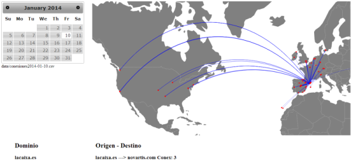
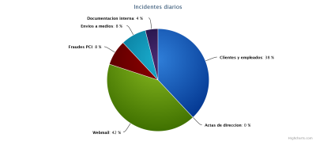
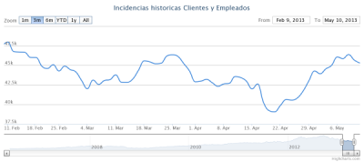
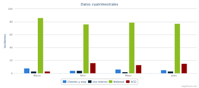
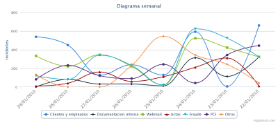
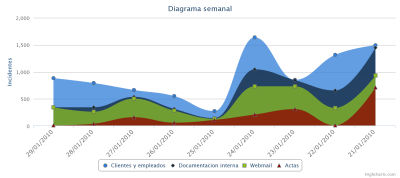
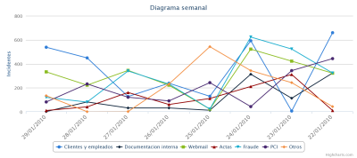
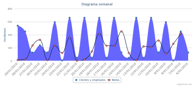

Zeneke
Gráficas con los datos de los incidentes
Todos los informes generados que se envian diaria y semanalmente
A continuación se muestran la siguientes gráficas.

Datos diarios
Datos de ayer
Incidentes diarios mostrado por porcentajes
Se actualiza todos los días

Datos de 3 meses
Estadisticas de las incidencias por Políticas:
Adjuntos a Webmail
Clientes y Empleados
Datos generales
Documentacion interna
Envios a medios
Fraudes en tarjetas
Se actualiza todos los Sábados

Datos de todos los meses
Datos de todos los meses anteriores a Octubre
Diagrama de barras que muestra las politicas por meses
Se actualiza el día 1 de cada mes

Datos semanales
Datos de 7 dias anteriores a hoy
Muestra los incidentes diarios por semana mediante CURVAS
Se actualiza todos los dias

Datos de 7 dias anteriores a hoy
Muestra los incidentes semanales por área
Se actualiza todos los días

Datos de 7 dias anteriores a hoy
Muestra los incidentes diarios por semana mediante LINEAS
Se actualiza todos los días

Media de 2 semanas (TEST)
Muestra los datos de varios dias anteriores y la media
